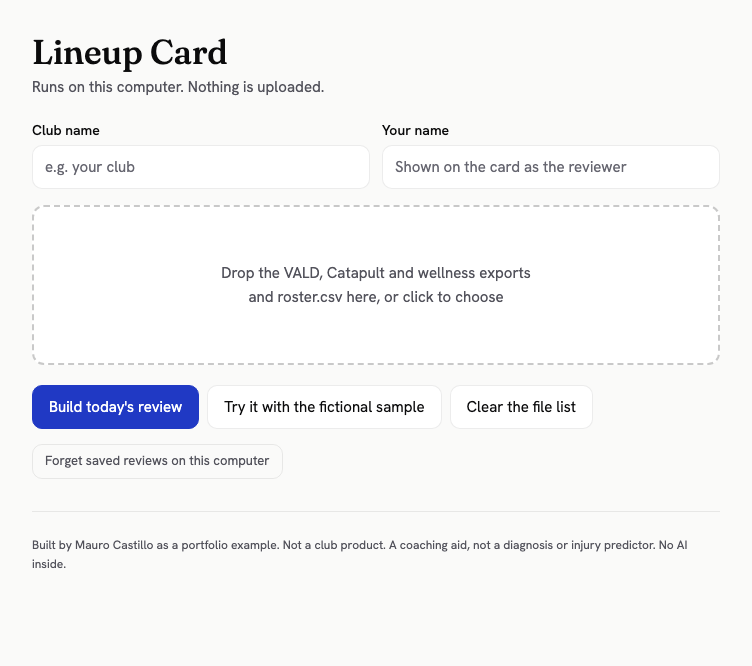
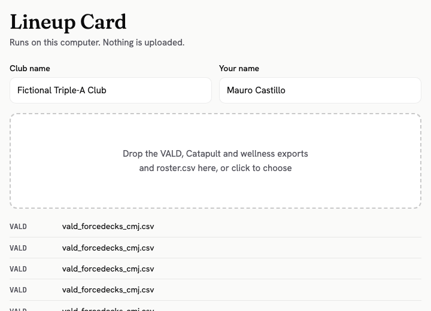
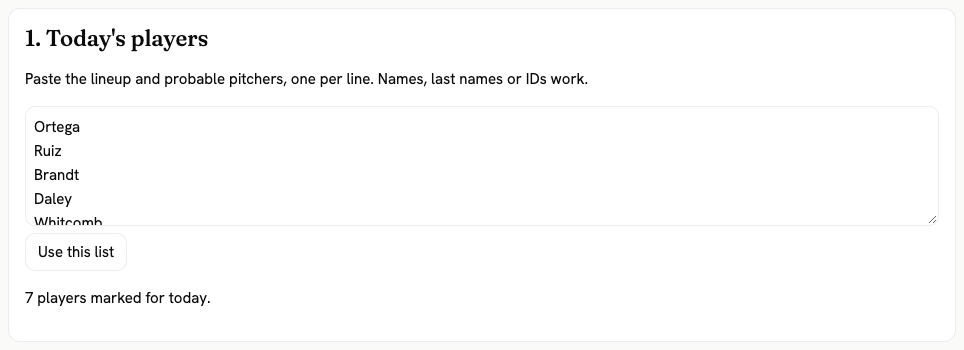
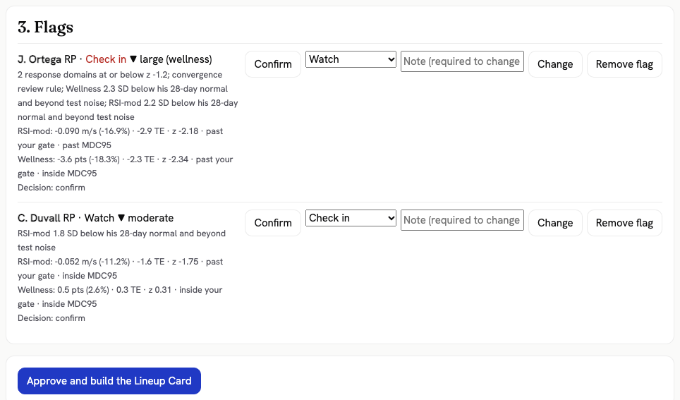
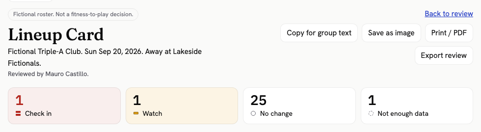

Lineup Card: how to use it
One file. It runs in Edge or Chrome on this computer. No install, no account, no internet needed.
1 Open the file
Double-click lineup-card.html. It opens in your web browser. To practice first, click "Try it with the fictional sample".

2 Type club and name, then drop the files
Drop the VALD, Catapult and wellness exports and roster.csv on the box. Each file found is listed with its type.

3 Mark today's lineup
Click "Build today's review". Paste the lineup and probable pitchers, one per line. Names, last names or IDs work. Click "Use this list".

4 Decide each flag and approve
For each flag, click Confirm, or pick a new status and click Change, or click Remove flag. Change and Remove need a note. Then click "Approve and build the Lineup Card".

5 Print, save the image, or copy for group text
To print or make a PDF, press Ctrl+P (Cmd+P on a Mac). The card fits on one Letter page. "Save as image" saves a picture. "Copy for group text" copies a short text summary. "Export review" saves your decisions as a file for your records.

What the words mean
- Check inTalk with him before he trains. The clearest change from his own normal.
- WatchKeep an eye on him today. A smaller change worth a look.
- No changeNothing beyond his normal ups and downs.
- Not enough dataNo fresh reading, or not enough history yet.
A flag needs a drop that is big against his own last 28 days and bigger than normal test-to-test noise. Coaches and medical staff decide who plays.
What it needs
- VALD ForceDecks jump exports (CMJ), Catapult OpenField exports, and the morning wellness form, saved as CSV.
- roster.csv with
lc_id, name, pos, vald_external_id, catapult_name. It links each player across the files. Anyone not in it is held out and listed, never guessed. - Column names like the files in sample-data. In Excel, save as "CSV UTF-8".
- At least 10 readings of a measure in the 28 days before today, before that measure can flag a player. His latest reading must be from the last 4 days. Until then he shows Not enough data.
- Optional: schedule.csv (
date, opponent, home_away, note).
Where your data goes
Dropped files stay in browser memory and are gone when you close the tab. Saved reviews stay in this browser, under the club name. "Forget saved reviews on this computer" deletes them.